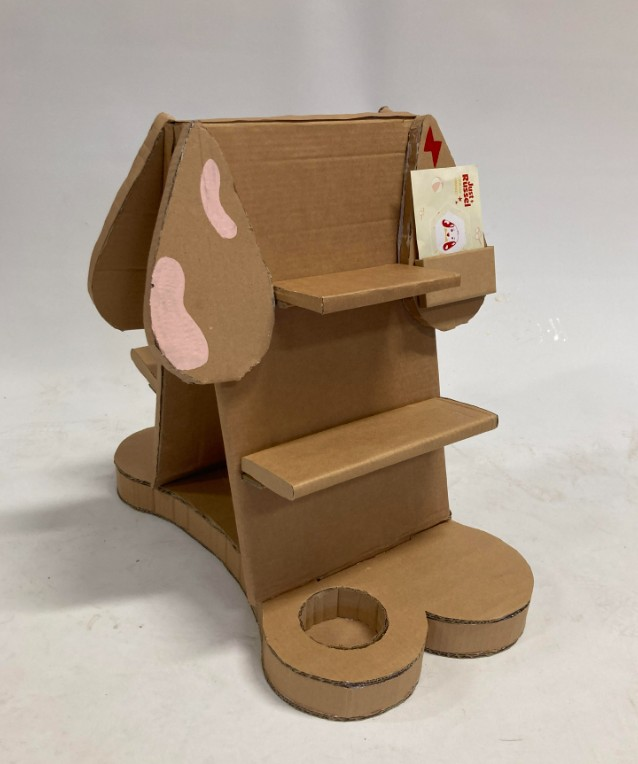
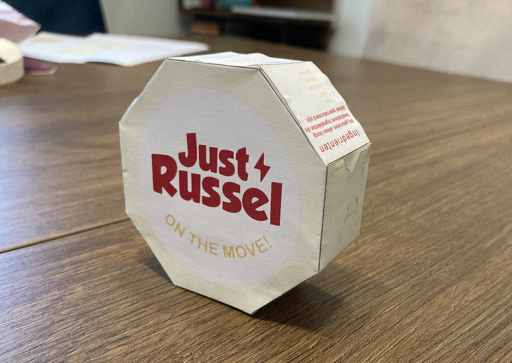
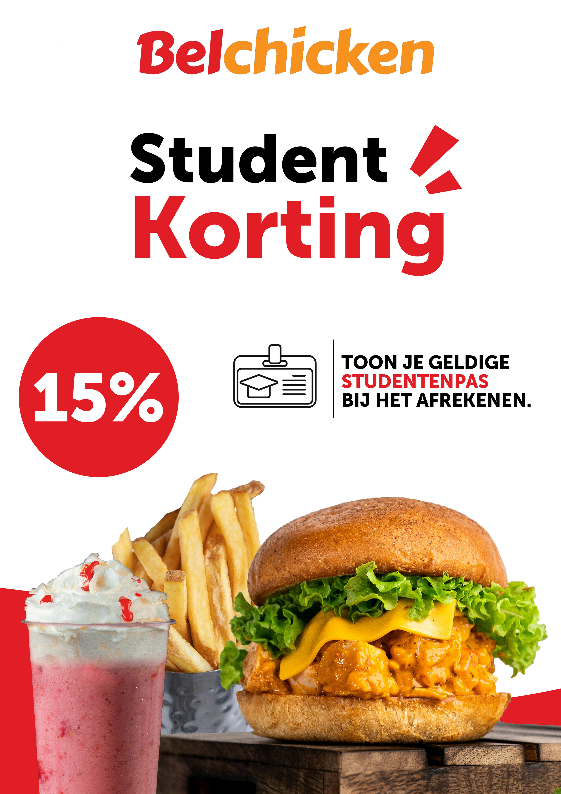
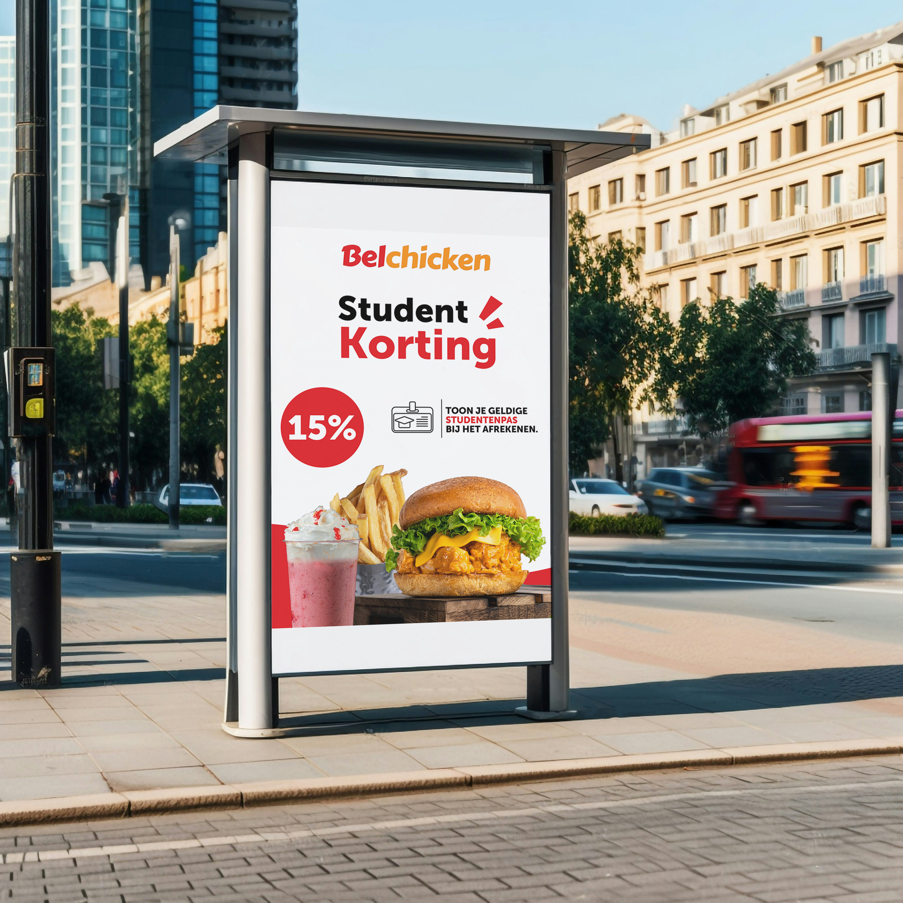
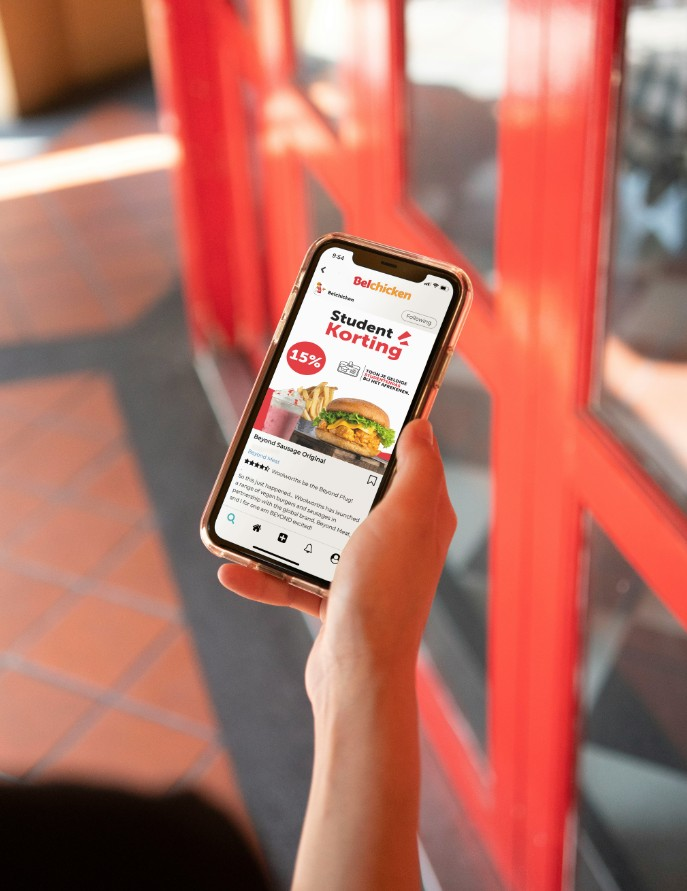

Schoolproject
UI Design
Voor dit project moesten we in groep een website maken. Mijn rol was het ontwerpen van de reviews en de footer. We hebben zowel een mobiele als een desktopversie gemaakt.


Ik ben een graphic design student die houdt van kleurrijke interfaces en het creëren van digitale ervaringen waar mensen plezier aan beleven.
Van jongs af aan is creativiteit mijn sterke punt, daarom heb ik gekozen voor de opleiding decor en etalage in het secundair. Ik werk graag zelfstandig, maar ben ook een goede teamplayer.
Deze richting geeft mij de perfecte opportuniteit om mijn passie voor kunst om te vormen naar een carrière. Ik zou graag websites en interfaces ontwerpen die zowel mooi als gebruiksvriendelijk zijn. Nieuwe vaardigheiden leren zoals een website maken of apps leren gebruiken zoals illustrator geeft mij de kans om mijn ideeën tot leven te brengen.
Ik sta open voor nieuwe ideeën en vind het leuk om verschillende stijlen en technieken uit te proberen. Ik kan al goed werken met Adobe Illustrator en Photoshop en ik ben mezelf aan het ontwikkelen op andere apps. Daarnaast ben ik up-to-date met trends dus weet ik wat klanten aanspreekt.
Voor dit project moesten we in groep een website maken. Mijn rol was het ontwerpen van de reviews en de footer. We hebben zowel een mobiele als een desktopversie gemaakt.
Voor dit project heb ik een 3D-kartonnen stand, verpakking en postkaart gemaakt voor Just Russel. De postkaart en verpakking heb ik ontworpen in Adobe Illustrator.




Voor dit project heb ik een conceptdesign gemaakt voor Bel Chicken. Het is een menu gericht op studenten, omdat veel studenten met een beperkt budget toch lekker en betaalbaar willen eten.



E-mail: edaulastepe@gmail.com
Privacybeleid